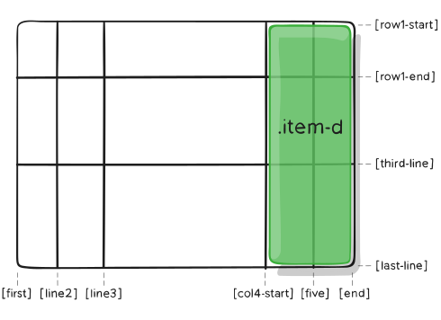

Properties for the Parent (Grid Container)
display
Defines the element as a grid container and establishes a new grid formatting context for its contents.
Values:
- grid - generates a block level grid
- inline-grid - generates an inline level grid
.container {
display: grid | inline-grid;
}
grid-template-columns
grid-template-rows
Defines the columns and rows of the grid with a space-separated list of values. The values represent the track size, and the space between them represents the grid line.
Values:
- track-size - can be a length, a percentage, or a fraction of the free space in the grid using the fr unit
- line-name - an arbitrary name of your choosing
.container {
grid-template-columns: ... ...;
/* e.g.
1fr 1fr
minmax(10px, 1fr) 3fr
repeat(5, 1fr)
50px auto 100px 1fr
*/
grid-template-rows: ... ...;
/* e.g.
min-content 1fr min-content
100px 1fr max-content
*/
}
Grid lines are automatically assigned positive numbers from these assignments (-1 being an alternate for the very last row).
But you can choose to explicitly name the lines. Note the bracket syntax for the line names:
.container {
grid-template-columns: [first] 40px [line2] 50px [line3] auto [col4-start] 50px [five] 40px [end];
grid-template-rows: [row1-start] 25% [row1-end] 100px [third-line] auto [last-line];
}
Note that a line can have more than one name. For example, here the second line will have two names: row1-end and row2-start:
.container {
grid-template-rows: [row1-start] 25% [row1-end row2-start] 25% [row2-end];
}
If your definition contains repeating parts, you can use the repeat() notation to streamline things:
.container {
grid-template-columns: repeat(3, 20px [col-start]);
}
Which is equivalent to this:
.container {
grid-template-columns: 20px [col-start] 20px [col-start] 20px [col-start];
}
If multiple lines share the same name, they can be referenced by their line name and count.
.item {
grid-column-start: col-start 2;
}
The fr unit allows you to set the size of a track as a fraction of the free space of the grid container. For example, this will set each item to one third the width of the grid container:
.container {
grid-template-columns: 1fr 1fr 1fr;
}
The free space is calculated after any non-flexible items. In this example the total amount of free space available to the fr units doesn’t include the 50px:
.container {
grid-template-columns: 1fr 50px 1fr 1fr;
}
grid-template-areas
Defines a grid template by referencing the names of the grid areas which are specified with the grid-area property. Repeating the name of a grid area causes the content to span those cells. A period signifies an empty cell. The syntax itself provides a visualization of the structure of the grid.
Values:
- grid-area-name - the name of a grid area specified with grid-area
- . - a period signifies an empty grid cell
- none - no grid areas are defined
.container {
grid-template-areas:
"grid-area-name | . | none | ..."
"...";
}
Example:
.item-a {
grid-area: header;
}
.item-b{
grid-area: main;
}
item-c{
grid-area: sidebar;
}
item-d{
grid-area:footer;
}
.container{
display: grid;
grid-template-columns: 50px 50px 50px 50px;
grid-template-rows: auto;
grid-template-areas:
"header header header header"
"main main . sidebar"
"footer footer footer footer";
}
That’ll create a grid that’s four columns wide by three rows tall. The entire top row will be composed of the header area. The middle row will be composed of two main areas, one empty cell, and one sidebar area. The last row is all footer.
Each row in your declaration needs to have the same number of cells.
You can use any number of adjacent periods to declare a single empty cell. As long as the periods have no spaces between them they represent a single cell.
Notice that you’re not naming lines with this syntax, just areas. When you use this syntax the lines on either end of the areas are actually getting named automatically. If the name of your grid area is foo, the name of the area’s starting row line and starting column line will be foo-start, and the name of its last row line and last column line will be foo-end. This means that some lines might have multiple names, such as the far left line in the above example, which will have three names: header-start, main-start, and footer-start.
grid-template
A shorthand for setting grid-template-rows, grid-template-columns, and grid-template-areas in a single declaration.
Values:
- grid-template-rows / grid-template-columns - sets grid-template-columns and grid-template-rows to the specified values, respectively, and sets grid-template-areas to none
- none - sets all three properties to their initial values
.container {
grid-template: none | grid-template-rows / grid-template-columns;
}
It also accepts a more complex but quite handy syntax for specifying all three. Here’s an example:
.container {
grid-template:
[row1-start] "header header header" 25px [row1-end]
[row2-start] "footer footer footer" 25px [row2-end]
/ auto 50px auto;
}
That’s equivalent to this:
.container {
grid-template-rows: [row1-start] 25px [row1-end row2-start] 25px [row2-end];
grid-template-columns: auto 50px auto;
grid-template-areas:
"header header header"
"footer footer footer";
}
Since grid-template doesn’t reset the implicit grid properties (grid-auto-columns, grid-auto-rows, and grid-auto-flow), which is probably what you want to do in most cases, it’s recommended to use the grid property instead of grid-template.
column-gap
row-gap
Specifies the size of the grid lines. You can think of it like setting the width of the gutters between the columns/rows.
Values:
- line-size - a length value
.container {
column-gap: line-size;
row-gap: line-size;
}
Example:
.container {
grid-template-columns: 100px 50px 100px;
grid-template-rows: 80px auto 80px;
column-gap: 10px;
row-gap: 15px;
}
The gutters are only created between the columns/rows, not on the outer edges.
gap
A shorthand for row-gap and column-gap
Values:
- grid-row-gap grid-column-gap - length value
.container {
gap: grid-row-gap grid-column-gap;
}
Example:
.container {
grid-template-columns: 100px 50px 100px;
grid-template-rows: 80px auto 80px;
gap: 15px 10px;
}
If no row-gap is specified, it’s set to the same value as column-gap
Properties for the Children (Grid Items)
grid-column-start
grid-column-end
grid-row-start
grid-row-end
Determines a grid item’s location within the grid by referring to specific grid lines. grid-column-start/grid-row-start is the line where the item begins, and grid-column-end/grid-row-end is the line where the item ends.
Values:
- line - can be a number to refer to a numbered grid line, or a name to refer to a named grid line
- span number - the item will span across the provided number of grid tracks
- span name - the item will span across until it hits the next line with the provided name
- auto - indicates auto-placement, an automatic span, or a default span of onee
.item {
grid-column-start: number | name | span number | span name | auto;
grid-column-end: number | name | span number | span name | auto;
grid-row-start: number | name | span number | span name | auto;
grid-row-end: number | name | span number | span name | auto;
}
Example:
.item-a {
grid-column-start: 2;
grid-column-end: five;
grid-row-start: row1-start;
grid-row-end: 3;
}
.item-b {
grid-column-start: 1;
grid-column-end: span col4-start;
grid-row-start: 2;
grid-row-end: span 2;
}
If no grid-column-end/grid-row-end is declared, the item will span 1 track by default.
Items can overlap each other. You can use z-index to control their stacking order.
grid-column
grid-row
Shorthand for grid-column-start + grid-column-end, and grid-row-start + grid-row-end, respectively.
Values:
- start-line / end line - ach one accepts all the same values as the longhand version, including span
.item {
grid-column: start-line / end-line | start-line / span value;
grid-row: start-line / end-line | start-line / span value;
}
Example:
.item-c {
grid-column: 3 / span 2;
grid-row: third-line / 4;
}
If no end line value is declared, the item will span 1 track by default.
grid-area
Gives an item a name so that it can be referenced by a template created with the grid-template-areas property. Alternatively, this property can be used as an even shorter shorthand for grid-row-start + grid-column-start + grid-row-end + grid-column-end.
Values:
- name - a name of your choosing
- row-start / column-start / row-end / column-end - can be numbers or named lines
.item {
grid-area: | / / / ;
}
Example:
As a way to assign a name to the item:
.item-d {xx
grid-area: header;
}
As the short-shorthand for grid-row-start + grid-column-start + grid-row-end + grid-column-end:
.item-d {
grid-area: 1 / col4-start / last-line / 6;
}
